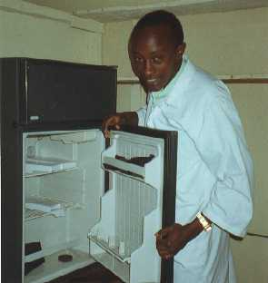

Maart 2000
Bram Moolenaar, de penningmeester van ICCF Holland, bezocht het project in
Uganda. Hier is zijn verlag:
Kliniek
Er is een kleine kliniek op het project. De laatste twee jaar is het flink
verbeterd. Meer en meer dorpelingen weten het te vinden. Ik was er op een
marktdag. Meer als honderd patiënten kwamen voor medische hulp. Het was
druk met patiënten die op behandeling wachtten. Op andere dagen zijn er
rond dertig patiënten. Gemiddeld meer als tweehonderd per week. Dus de
kliniek verzorgd een belangrijke service in de gemeenschap. Ik heb met een
paar mensen gepraat, en zij waren erg blij met de geboden medische hulp.
|
De patiënten betalen een klein bedrag voor de behandeling en medicijnen.
Maar dit is niet genoeg om de kosten te dekken. Alleen door donaties kan de
kliniek blijven draaien, want de patiënten zijn niet in staat om meer te
betalen. De basisschool de Lisbloem in Lisse heeft een flink bedrag
geschonken, wat is gebruikt om een koelkast op zonne-energie te kopen.
Medicijnen kunnen hierin koel bewaard worden. De foto laat
assistent-verpleger Boaz zien met de nieuwe koelkast. Boaz is een van de
weeskinderen die op het centrum opgegroeide toen ik daar werkte in 94/95.
Door het sponsorprogramma was hij in staat om een opleiding te volgen. Het
was fijn te zien dat hij nu in de kliniek werkt.
Er is een Ugandese zuster die de hele week werkt en een dokter die op de
marktdagen komt helpen. We hopen dat het komend jaar de kwaliteit van de
medische hulp verder verbeterd kan worden. Een klein laboratorium zou erg
nuttig zijn, en voldoende opgeleid personeel.
|

|
School
De beroepsopleiding was juist uitgebreid met een kleermakers klas. Ik heb de
leerlingen zien genieten van de eerste lessen. Ze worden gegeven in een nieuw
gebouw, dat wordt gedeeld met de timmeropleiding die vorig jaar van start
ging. De school omvat nu kleuterklassen, basisschool, middelbaar onderwijs en
de beroeps opleiding. Alle leeraren zijn nu Ugandees en hebben voldoende
opleiding. Er zijn totaal ongeveer vierhonderd leerlingen die genieten van
kwaliteits onderwijs.
Behalve het draaiend houden van de school in Kibaale wordt er ook aandacht
gegeven aan leraren in scholen in omliggende dorpen. Veel van hen hebben zelf
niet meer opleiding als lagere school. Er worden trainingen gegeven om hun
kennis en het lesgeven te verbeteren. Het teacher resources center helpt hen
aan lesmateriaal.
Ik was blij de vrolijke kinderen op de school te zien. En ze blijven tot het
eind van de middag om te voetballen en volleyballen. Een hele verbetering ten
opzichte van 1993, toen ik het project voor het eerst bezocht. Er waren maar
drie klassen en de meeste leraren hadden geen opleiding. Nu is de school een
voorbeeld voor de wijde omgeving.
Sponsors

|
Veel kinderen kunnen het schoolgeld niet betalen. Daarom betalen sponsors
maandelijks om hen te ondersteunen. Ik heb acht families van gesponsorde
kinderen thuis opgezocht. Op de foto staat Nabasagi Morine, een van onze
jongste kinderen. Ze is zes jaar oud en gaat naar de kleuterschool.
Over het algemeen zijn deze families net aan in staat om het huishouden
draaiend te houden. Ze hebben de basis zaken als een huis, wat kleren en
verbouwen hun eigen eten. En niks meer dan dat. Een familie was echter
beneden het gemiddeld niveau. Hun huis lekt, er zijn geen dekens voor de
kinderen en geen matrassen. Ik heb gevraagd of ze de familie in ieder geval
dekens kunnen geven. Hopelijk kunnen we een manier vinden waarop ze voor
zichzelf kunnen zorgen. Dat is beter dan ze afhankelijk te maken van onze
giften.
|
Er zijn nog veel kinderen niet gesponsord. Hopelijk vinden we dit jaar weer
een aantal nieuwe sponsors. De organisatie die voor de kinderen zorgt,
Kibaale Childrens Fund (KCF) draait erg goed. Er zijn twee Ugandezen die de
kinderen opzoeken en een Canadese vrijwilliger. Ze zorgen ervoor dat de
kinderen naar school kunnen, bezoeken ze thuis en brengen ze naar het
ziekenhuis als dat nodig is. Ik heb drie kinderen vergezeld naar het
ziekenhuis, samen met een assistent-verpleger. De tuin van het ziekenhuis
ziet er erg mooi uit, maar de kwaliteit van de medische hulp is laag. Helaas
is er geen andere plaats met een opgeleide dokter en een laboratorium.
Wellicht zullen we proberen de kliniek op het project uit te breiden op dit
probleem op te lossen.
Afsluiting
Ik heb aardig wat verbeteringen gezien ten opzichte van mijn bezoek in 1998.
Wegen zijn verbeterd, er is meer verkeer en handel. Het Kibaale Childrens
Center draait heel goed en grotendeels met Ugandees personeel. De school
functioneert zeer goed en de kliniek geeft medische hulp aan vele
patiënten. De komende tijd zal vooral aandacht zijn voor het voortzetten
van het project en verdere verbetering van de kwaliteit. Ik sta er volledig
achter.
|